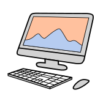
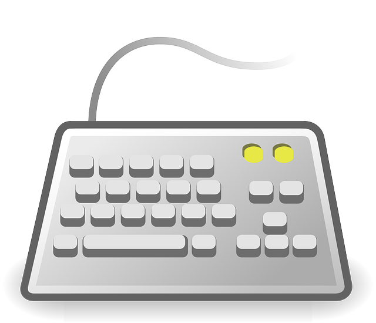
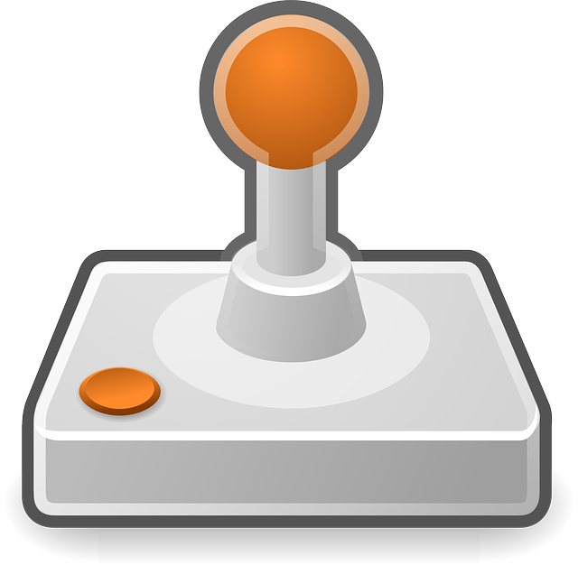
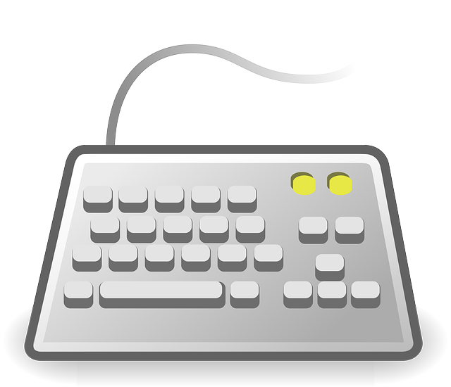
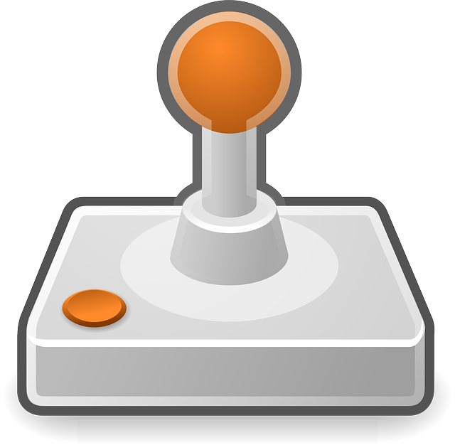
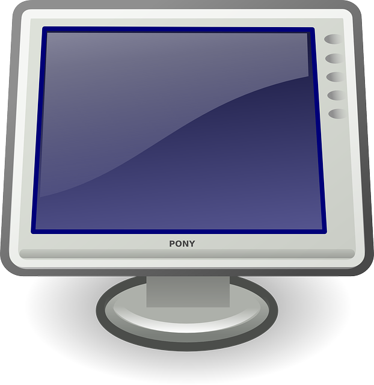
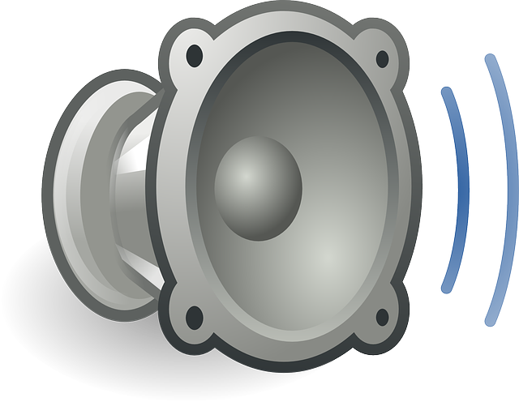

Vhodno izhodne naprave |
 |
|---|
Vhodno – izhodne naprave so naprave za prenos podatkov med CPE in glavnim pomnilnikom ter zunanjim svetom. So del strojne opreme, ki nam omogoča komunikacijo z računalnikom.
Vhodne naprave pošiljajo računalniku informacije za procesiranje, ne morejo pa sprejemati podatkov. Primeri vhodnih naprav so miška, tipkovnica, mikrofon, spletna kamera, joysticki in drugi pripomočki za igranje igric.
 



Ravno obratno funkcijo kot vhodne naprave, imajo izhodne naprave. Izhodne naprave sprejemajo informacije, ki jih dobijo iz računalnika. Te informacije nato reproducirajo oziroma prikažejo uporabniku. Primeri izhodnih naprav pa npr. zaslon, zvočnik, slušalke, projektor.
 Večina naprav ima ali funkcijo vhodne naprave ali funkcijo izhodne naprave, poznamo pa tudi naprave, ki lahko tako sprejemajo, kot tudi pošiljajo podatke računalniku, to so vhodno - izhodne naprave. Tipična primera sta USB ključek in zaslon na dotik.